Вітальня «ДентАрту» · журнал «ДентАрт» 2022 №2
Ігор Федірко: «Кожен повинен під час війни працювати на своєму місці інтенсивніше і більше надавати послуг на волонтерських засадах»
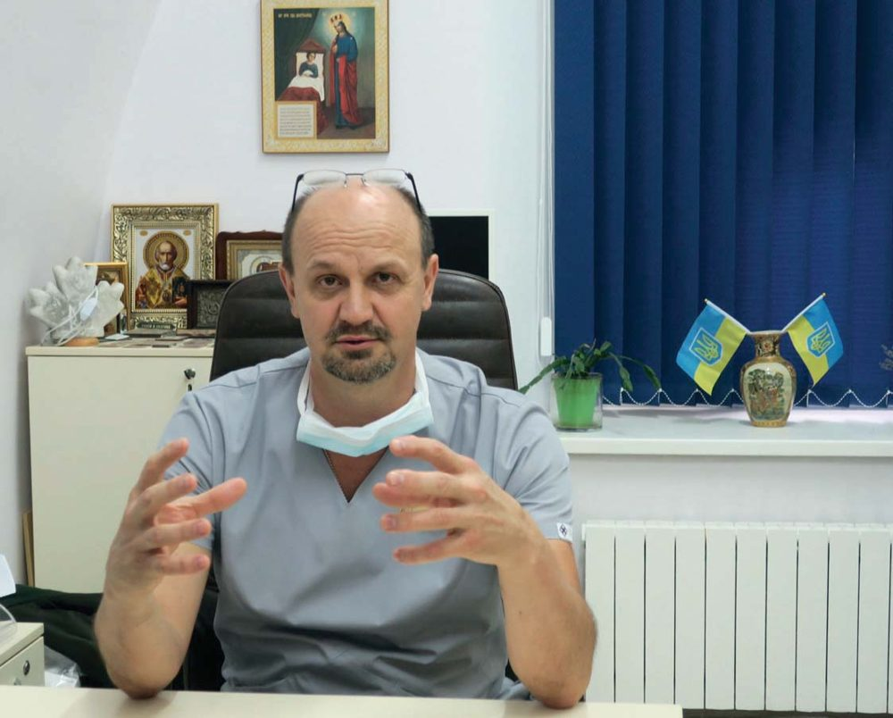
Сьогодні у Вітальні «ДентАрту» на читачів чекає зустріч з Ігорем Володимировичем Федірком, головним щелепно-лицевим хірургом Міністерства оборони України, начальником клініки щелепно-лицевої хірургії та стоматології Національного військово-медичного клінічного центру «Головний військовий клінічний госпіталь» МОУ, заслуженим лікарем України, кандидатом медичних наук, полковником медичної служби, хірургом вищої категорії, учасником АТО. І розмова наша – про те, як щелепно-лицеві хірурги і стоматологи сьогодні рятують життя і повертають здоров’я воїнам, що захищають Україну від російських агресорів.
Бути справжнім стоматологом – це ще й мати хист до мистецтва
— Шановний Ігорю Володимировичу, дякую, що Ви знайшли час у своєму напруженому графіку для інтерв’ю «ДентАртові» – журналові про науку і мистецтво у стоматології. У цих інтерв’ю ми намагаємося подивитися на нашу професію через життєвий шлях визначних стоматологів… Знаємо, що Ваш професійний шлях розпочався з медичного училища, але у вищій медичній освіті Ви обрали саме стоматологічний факультет. Чому Ви стали стоматологом, що спонукало до такого вибору?
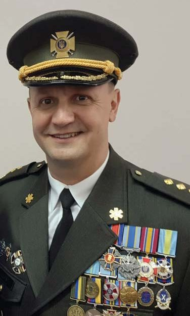
— Професію свою я обрав, коли мені було п’ять років. Тоді я вирішив, що буду лікарем, і потім так себе й націлював. Дідусь мій Микола Григорович Маєвський був аптекарем, а одним із моїх наставників у медицині був мій дядько Юрій Маєвський, стоматолог. Після восьмого класу по його стопах я пішов навчатися на фельдшерське відділення Коломийського медучилища на Івано-Франківщині, яке закінчив з відзнакою.
Теоретична підготовка тоді була дуже сильною, готували всіх до служби в армії. Попрацював пів року у фельдшерсько-акушерському пункті, в лікарняній амбулаторії – і пішов у військкомат, узяв повістку в армію. Служив на Балтійському флоті. А коли відслужив, став обирати, куди мені вступати, щоб стати лікарем. Гарні відгуки чув про Львівський медичний університет, поїхав туди і вступив на навчання з першого разу. Це був великий успіх, бо деякі мої однокурсники вступили тільки за п’ятим чи сьомим разом, а одна дівчина – аж за дванадцятим… Парадокс: з дитинства я боявся стоматологів. Можливо, бажання внести певні зміни і зробити цю спеціальність менш відлякуючою для себе та інших були вирішальними.
— У стоматології, яка є дуже широкою за напрямками і методами, Ви обрали саме щелепно-лицеву хірургію… Як це сталося, хто привів Вас до хірургії, та ще й у такій складній сфері?
— Мене завжди приваблювала хірургія. Ще працюючи фельдшером, я виконував прості операції, перев’язки ран. Мій дядько Юрій дуже слушно зауважив, що хірургія є і в стоматології, і це цікава, творча і дуже потрібна спеціальність. «Якщо ти підеш у стоматологи, то ніколи не пошкодуєш», – жартома говорив він.
Тоді, щоправда, щелепно-лицева хірургія була відсутня в переліку спеціальностей і з’явилася там лише у 2020 році. Хоча десятиліттями вона існувала, тільки називали її умовно хірургічною стоматологією.
Одним із моїх учителів був Іван Мирославович Готь, Царство йому Небесне. Він був деканом і завідувачем кафедри у Львівському медуніверситеті і привчав мене до хірургії. Додаткові знання приносила робота в науковому гуртку з хірургії. Надзвичайно цікаво було брати участь у наукових дослідженнях факультету, допомагати у проведенні експериментів, вивчати ази хірургії на тваринах. Моїм наставником на той час був Роман Зіновійович Огоновський, асистент кафедри хірургічної стоматології, а з 2012 року – декан стоматологічного факультету, який працював над кандидатською дисертацією, метою якої була (спробую пригадати) оптимізація методів лікування переломів щелеп методом клітинної ксенобрефотрансплантації. Цікаво, правда? Від самої тільки теми його дисертації виникало бажання поглиблювати власні знання і летіти в Космос!
Не можу не згадати ще двох моїх учителів, які змінили моє уявлення про стоматологію і постійно удосконалюють її й сьогодні. Це на той час молоді асистенти кафедри ортопедичної стоматології Мирон Угрин і Ярослав Заблоцький. Мені часто пригадуються практичні заняття з ними, після яких у голові й донині закарбовані важливість розуміння понять прикусу, центральної оклюзії та їх впливу на стан усієї зубощелепної системи. Ортопедична і хірургічна стоматологія насправді тісно пов’язані між собою, особливо в питаннях травматології. Майже всі переломи щелеп супроводжуються зміною прикусу, і тому дотримання правил його відновлення під час реконструктивних операцій є вкрай важливим.
З першого курсу я зрозумів, що стоматологія – дуже цікава наука. Я любив з дитинства малювати, ліпити, а стоматологові ці навички дуже допомагають. Бути справжнім стоматологом – це ще й мати хист до мистецтва. Думаю, дуже відрізняються зуби у людей, котрі потрапили на прийом до стоматолога, який відбуває день до вечора, і тих, що звернулися до справжнього фахівця, який зробив пломбу невидимою, коронку – так досконало підібраною за віком, кольором обличчя і навколишніх зубів, що від здорових зубів її не відрізниш…
Після завершення навчання у Львівському університеті я вирішив стати військовим медиком. Тому наступні два з половиною роки додатково навчався в Українській військово-медичній академії, після закінчення якої за результатами навчання мене направили на службу до Головного військового клінічного госпіталю Міністерства оборони України, де і працюю останні 26 років.
Звісно, що без додаткового навчання працювати в установі такого рівня було б важко. Тому я завжди шукав можливості навчатися новому. Робота в операційних університетських клінік Києва поруч із відомими професорами медуніверситету ім. Богомольця Владиславом Олександровичем Маланчуком, Володимиром Семеновичем Проциком дозволяла поповнювати свої теоретичні і практичні знання у щелепно-лицевій хірургії та онкології.
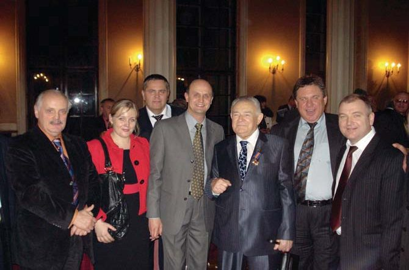
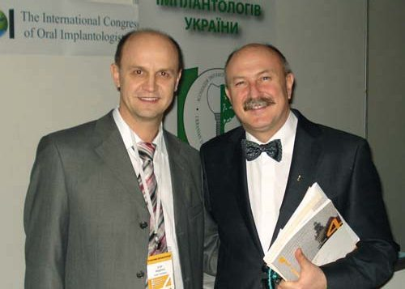
— У військовій хірургічній стоматології Ви маєте численні і тривалі стажування за кордоном – у Німеччині, Канаді, Швейцарії… Чи існує велика різниця в принципах і практиці оперативного лікування і реабілітації військовиків в Україні і Європі/світі?
— Мені пощастило служити і працювати під керівництвом начальників, для яких життєвим принципом було гасло «Вік живи – вік учись!» – тоді це був генерал-майор медичної служби Михайло Петрович Бойчак, а нині – генерал-майор медичної служби Анатолій Петрович Казмірчук. Вони завжди сприяли нашим лікарям, офіцерам госпіталю у поїздках на навчання за кордон. Це тривалі відрядження, на півтора-два роки, готуючись до яких, треба вивчити іноземну мову чи поглибити її знання. Щоб поїхати в Німеччину на навчання за програмою співпраці між Міноборони України і Бундесвером у 2006 році, мені потрібно було вивчити німецьку мову «з нуля», бо до цього я знав тільки англійську. Першим рівнем оволодів тут, ще двома рівнями – у Німеччині, бо там допуск до пацієнтів іде тільки з третього рівня, а всіх рівнів чотири. З нашого госпіталю проходили стажування в Німеччині сім лікарів.
Гамбург, Ульм, Кобленц – у цих містах діють потужні госпіталі, де роблять дуже складні операції: реконструктивно-пластична хірургія, онкологія, імплантологія… У «бундесверівських» шпиталях лікуються 10-15 відсотків військовиків, а 85-90 відсотків – цивільні пацієнти, яких сюди спрямовують страхові компанії, бо лікування у військових шпиталях було і залишається дуже престижним. Американські президенти, до слова, лікуються тільки у таких шпиталях на військових базах.
Принципових відмінностей у методах, практиці оперативного лікування військовиків в Україні і Європі на сьогодні немає. Після повернення з навчання в Німеччині у 2008 році мені вдалося впровадити в роботу нашої клініки та інших військових шпиталів сучасні, передові методи хірургічного лікування та реабілітації поранених, що відіграє сьогодні, під час російсько-української війни, надзвичайно важливу роль.
У чому є різниця, так це в матеріальному забезпеченні клінік, яке там на найвищому рівні, а у нас, на жаль, з ним є певні проблеми на всіх напрямках медицини. Я бачив, що якою б складною не була операція, для неї завжди є всі необхідні апарати, інструменти, матеріали. На виході з операційної лежать каталоги, і якщо для майбутніх операцій щось потрібно замовити, то через 5-7 днів усе надійде в клініку. У нас же інша система, так швидко потрібне не надходить. Матеріально-технічне забезпечення української медицини ще страждає. Віриться, що позитивні зміни настануть – завдяки новим менеджерам і правилам, а перспектива вступу до Євросоюзу буде додатковим стимулом до змін на краще з матеріально-технічним забезпеченням, зокрема й у цивільній медицині.
Щодо нашого госпіталю, то сьогодні він забезпечений обладнанням і матеріалами, як один з кращих медичних закладів країни. Він, до речі, – найстаріший лікувальний заклад України – заснований ще 1755 року…
Друге, що приємно вражало під час стажування у шпиталях Бундесвера, – це надзвичайно високий рівень теоретичної і практичної підготовки лікарів, з якими доводилося працювати. Вони також стажувалися у провідних клініках світу, і працювати з ними було просто, легко, захопливо. Ми спостерігали оперативні втручання, які у нас можна побачити хіба що в книжках або у спеціалізованих клініках. А там у військових шпиталях вони щодня на потоці, тож нам було чому повчитися. Високий фаховий рівень хірургів-стоматологів, щелепно-лицевих хірургів у країнах, де я стажувався, зумовлений передусім багаторівневою системою їхньої освіти.
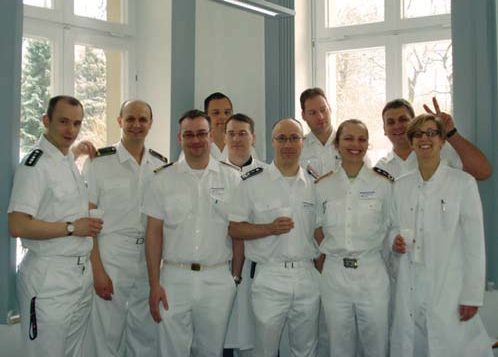
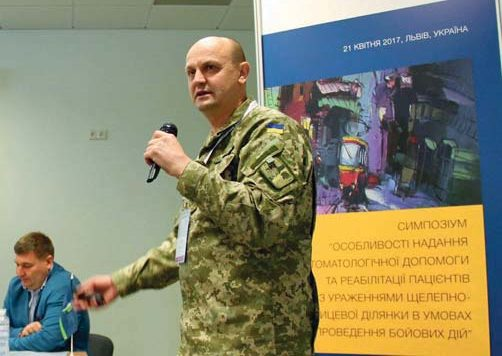
Щелепно-лицевим хірургам треба навчатися постійно
— Враховуючи Ваш досвід сучасної щелепно-лицевої хірургії і досвід ваших зарубіжних колег, наскільки треба змінити програму і практику підготовки лікарів-стоматологів у порівнянні з тією програмою, за якою навчалися Ви?
— Гадаю, в Україні ще довго сама система навчання буде залишатися такою, як є. А за кордоном, де я працював і служив, обов’язковим є закінчення двох факультетів – лікувального і стоматологічного, і там досить багато охочих спеціалізуватися у щелепно-лицевій хірургії і пройти це 10-11-річне навчання.
Я закінчував фельдшерське училище, тому моя базова підготовка до навчання у вузі була настільки сильною, що навчатися у медуніверситеті мені було набагато легше, ніж іншим студентам, які такої підготовки не мали.
Вважаю, що всі, хто хоче спеціалізуватися в хірургії, мають обов’язково пройти навчання у медичних коледжах, щоб для початку зрозуміти, що таке медицина, попрацювати в нижчій ланці, а потім вступати на стоматологічний чи лікувальний факультет медуніверситету.
Коли в Україні система підготовки теж зміниться, дай Боже, щоб у нас було так само багато охочих після лікувального факультету піти ще й на стоматологічний. Ясна річ, дехто уже сьогодні може навчатися за такою системою за кордоном, але навчання там дуже дороге, тож учитися краще і потрібно в Україні, а за кордоном бажано пройти додаткове навчання, стажування.
Вважаю, що в наших програмах підготовки хірургів-стоматологів слід збільшити кількість практичних занять. А щелепно-лицевим хірургам треба навчатися постійно, після закінчення університету вчитись і вчитись кожен рік – поїхавши або за кордон, або у спеціалізовану клініку в Україні. Узяти участь в операціях, набути досвіду, який рано чи пізно стане у пригоді.
Буває, що на початку своєї кар’єри побачиш якусь складну операцію, а пацієнт зі схожими проблемами зустрінеться тобі років через 25. Але якщо ти таку операцію бачив хоча б раз, тобі вже легше буде її спланувати і досягти успіху.
Щелепно-лицева хірургія відрізняється від інших розділів хірургії своєю складністю і частою потребою залучення до співпраці офтальмологів, отоларингологів, нейрохірургів, неврологів, психіатрів, особливо у випадках вогнепальних поранень. Цих фахівців залучаємо і для консультацій, і для спільних операцій. І все це слід враховувати у програмах підготовки лікарів.
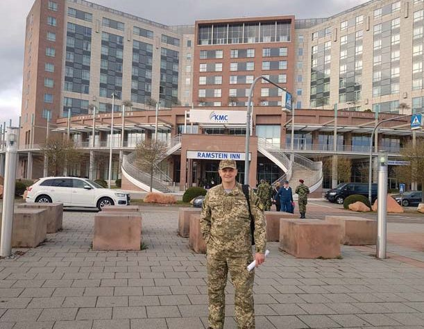
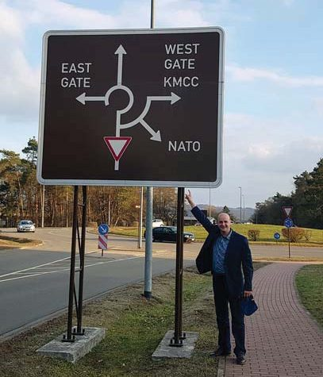
Гірка істина: хочеш миру – готуйся до війни…
— Чи цікавий український досвід сучасної воєнної хірургічної стоматології закордонним колегам?
— Нашим досвідом лікування бойових травм щелепно-лицевої ділянки цікавляться сьогодні всі країни-члени НАТО, і не тільки. За честь було отримати запрошення на міжнародну конференцію військових хірургів, яка відбувалася на вже добре всім відомій американській авіабазі Рамштайн, де я виступив з доповіддю про досягнення українських військових щелепно-лицевих хірургів у лікуванні поранених. Доповідь була визнана кращою на симпозіумі, за що я отримав спеціальну відзнаку з рук начальника медичної служби ВПС США. Вступ України до НАТО – на часі!
За 2014-2019 роки ми провели сім канадсько-українських місій спільно з канадськими лікарями, які були не лише фахівцями в галузі, але й патріотами України. Організував і очолював місію відомий у світі щелепно-лицевий і пластичний хірург Олег Антонишин з медичного центру Саннібрук у Торонто. Фінансувалася місія за рахунок коштів української діаспори. Батьки Олега з Львівщини, він народився в Канаді, але вільно володіє українською мовою. Батьки виростили його справжнім патріотом України. Олег – надзвичайна людина. Він був одним з перших, хто ще у 2014 році прилетів в Україну, щоб побачити, чим може допомогти. Він же розумів, наскільки тяжкі поранення у захисників України, і мав уявлення про нашу медицину, її проблеми. Спочатку Олег поїхав у Донецьк, а потім – до нас у госпіталь. Так зародилася наша професійна дружба. До проєкту підключився й уряд Канади – наступні три місії пізніше фінансувалися з держбюджету Канади.
У команді, яка приїжджала з Канади, було 25 фахівців: окрім щелепно-лицевих і пластичних хірургів, були травматолог, нейрохірург, анестезіологи, реабілітолог, медичні сестри. Вони допомагали тим бійцям, які мали естетичні та функціональні ускладнення після поранень – рубцеві деформації, дефекти м’яких тканин обличчя, кісток лицевого і мозкового черепа, верхніх і нижніх кінцівок і потребували відповідних складних реконструктивно-пластичних операцій. Ми проводили відбір пацієнтів перед цими місіями за показаннями і відбирали 50-70 поранених для хірургічного лікування. Сама місія тривала протягом тижня, тож встигнути всіх прооперувати у її лікарів не було можливості, але те, що вони робили у пластичній хірургії, – це неоціненна допомога і українським колегам, і передусім – нашим воїнам.
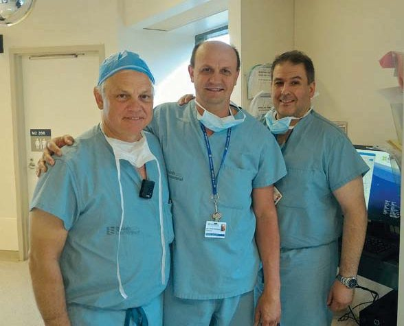
— Українські стоматологи вивчали військово-польову хірургію на основі досвіду Другої світової війни. Ви зараз маєте неймовірний для сучасного світу досвід у російсько-українській війні, що триває вже 9-й рік… Наскільки відрізняються щелепно-лицеві бойові травми за підручниками того часу і в нинішній війні? Чи маєте Ви зараз бажання переписати Аржанцева?
— Маю. Чим відрізняються поранення у нинішній війні від минулих воєн? Погляньмо на статистичні дані. Під час Другої світової війни поранення, пов’язані зі щелепно-лицевою ділянкою, становили 3-4% (за офіційними радянськими даними). А нині ця цифра – близько 30% (у різних країнах, де відбуваються бойові дії, від 25 до 40%). Поранення, пов’язані з переломами кісток лицевого черепа, становлять, за різними даними, від 5 до 12-15%.
Якщо порівнювати поранення за тяжкістю, то ті, які маємо сьогодні, – дуже складні і тяжкі, бо удосконалюється зброя, розрахована на те, щоб завдати максимальної шкоди. Це ураження високоточною зброєю, мінно-вибухові травми, поєднані або комбіновані ушкодження, коли ми лікуємо бійців, у яких, окрім пораненого обличчя, відсутні кінцівки чи ушкоджена черевна порожнина, є опіки – тобто тяжкість ушкоджень нині набагато більша. Рашисти застосовують проти оборонців України і цивільного населення заборонені види зброї, і це теж збільшує ризик тяжких поранень.
Ось нещодавно ворог завдав ракетних ударів по цивільній інфраструктурі у Вінниці, по мирних людях. Стрілецька зброя тут не використовується. росія розуміє, що вона цю війну програла, воювати за путіна все менше й менше охочих, бо з тих охочих, які думали, що за 2-3 дні вони будуть іти маршем по Хрещатику, живими залишилися одиниці, і вони радять своїм «колегам» не пертися в Україну воювати, бо тут сильна армія. Відтак рашисти обрали тактику ракетного терору, ударів по об’єктах інфраструктури, житлових будинках, цивільному населенню. Тому кількість поранених із мінно-вибуховими травмами сьогодні сягає 90-95%, кульові ушкодження зустрічаються значно рідше у порівнянні з минулими роками.
Також кількість і структура ушкоджень відрізняються залежно від того, це період наступу чи оборони. З 2014 по 2018 рік була нелегка пора, бо провадилося багато наступальних операцій, а під час них військо зазнає більших втрат. Пізніше, коли російсько-українська війна перейшла у позиційну, набагато зменшилася і кількість, і тяжкість поранень. А з 24 лютого цього року, відколи триває повномасштабне вторгнення РФ, ми працюємо щодня, зранку до пізньої ночі.
Наша клініка, до речі, була заснована під час Першої світової війни, у 1915 році. Тоді були великі проблеми з лікуванням поранених у обличчя. Інфекції, якими ускладнювалися вогнепальні поранення, призводили до того, що 50-70% поранених помирали. Антибіотиків тоді не було. Щелепно-лицева хірургія України бере початок, можна сказати, з нашої клініки також. Тут працювали Костянтин Прокопович Тарасов (який пізніше, з 1920 по 1931 рік, був першим деканом одонтологічного факультету Київського університету), Северин Северинович Тігерштедт – свої шини він винайшов саме в нашій клініці.
Під час Другої світової війни кількість штатних ліжок клініки збільшувалася, наприклад, у 1943 році до 400 ліжок, через значну кількість поранених. Важко навіть уявити, який обсяг роботи виконували на той час лікарі й медичні сестри.
Наша справа сьогодні – гідно продовжувати розпочате нашими попередниками. Своїм досвідом ми ділимося з колегами на всеукраїнських конференціях. Але у 2014-2021 роках зацікавленість щелепно-лицевих хірургів і хірургів-стоматологів воєнною тематикою була не такою високою. На секціях з військової стоматології я бачив своїх колег з військових шпиталів і поодиноких лікарів з інших, цивільних клінік. На перших конференціях під час війни зацікавленість була вищою, а потім колегам, що лікують цивільне населення, мабуть, стало здаватися, що війна якось та закінчиться, пройде повз них, і будуть усі вони жити своїм звичним мирним життям. А життя вкотре підтвердило гірку істину: «Хочеш миру – готуйся до війни». І це правило спрацювало і щодо нашої цивільної медицини.
На жаль, не всі лікувальні заклади сьогодні мають фахівців, здатних професійно прооперувати пораненого. Їм бракує досвіду, спеціального інструментарію та витратних матеріалів. Можна прочитати багато літератури, як вітчизняної, так і зарубіжної, але якщо ти на практиці ніколи не стикався з тяжкою вогнепальною травмою, яка супроводжується значними ушкодженнями м’яких тканин, кісток обличчя з втратою очей, частин лиця, вух, носа, губ, то легко й розгубитися в цій ситуації. Тут треба знати, що і коли робити, в якому порядку надавати допомогу.
На щастя, всі військові шпиталі можуть впоратися з цією роботою. Більшість моїх колег по службі з усіх шпиталів мають бойовий досвід під час проведення АТО, ООС, стажувалися в моїй клініці, тож професійно підготувалися до цієї війни. І досвід лікарів наших шпиталів має стати набутком і тих хірургів, що працюють у закладах цивільної медицини.
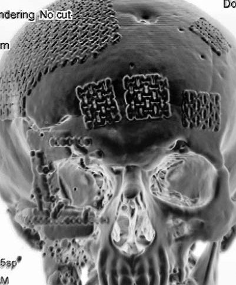
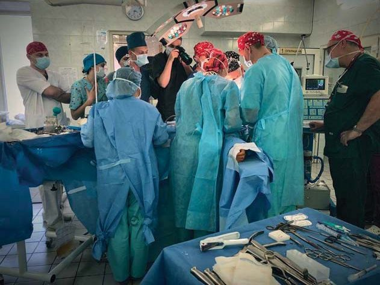
— Добре, як у тій чи іншій області діють військові госпіталі зі щелепно-лицевими відділеннями. Бо, пам’ятаю, говорили, що такого відділення не було на Луганщині…
— Коли почалася війна, з Донецької і Луганської областей виїхали практично всі лікарі-стоматологи. Я, проходячи службу в зоні АТО у 2016 році, зіткнувся з цією проблемою, бо не було ні лікаря-стоматолога, ні хірурга-стоматолога, не кажучи вже про щелепно-лицевих хірургів, – не було нікого на дві області. І донині ця проблема вирішується лише за рахунок військових щелепно-лицевих хірургів у військових шпиталях.
Тому ми дуже вдячні Миронові Угрину за його ініціативу «ТриЗуб Дентал», відому сьогодні на весь світ. Це допомога не лише нашим бійцям у збереженні здоров’я ротової порожнини, а й нам, щелепно-лицевим хірургам. Бо пораненим пацієнтам, які мають непроліковані зуби, складніше надати допомогу, якщо немає куди накласти ті ж шини і зробити хоча б тимчасову іммобілізацію уламків. Велика кількість каріозних зубів, які додатково інфікують рани, спричиняє ускладнення, що можуть призвести до загибелі пацієнта. Тому у наших захисників мають бути не тільки здоровий дух і високі бойові навички, а й здорові зуби. З початком повномасштабної рашистської агресії проти України Фонд Мирона Угрина з власної ініціативи і за власні кошти закуповує і постачає матеріали для щелепно-лицевої хірургії шпиталів та цивільних лікарень України, а також докладає великих зусиль до того, щоб такі матеріали надходили з країн ЄС, США.
Не можу не згадати також нашого великого друга з Литви, відомого хірурга-гнатолога Сімонаса Грибаускаса. Завдяки його особистим зусиллям, за підтримки Європейської асоціації черепно-щелепно-лицевих хірургів і компанії KLS-Martin, для потреб військових і цивільних щелепно-лицевих клінік України передано титанові пластини, гвинти, інструменти для остеосинтезу на мільйони гривень.
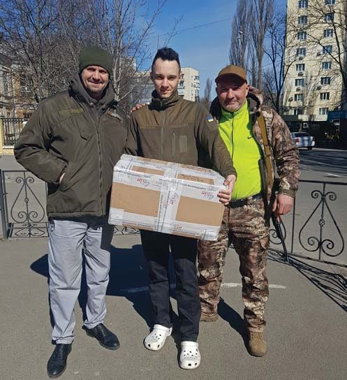
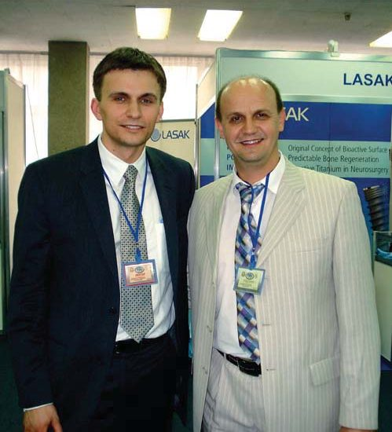
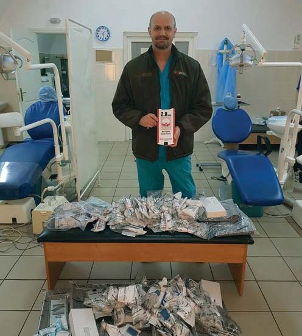
Жодного пацієнта за свою тривалу кар’єру не втратив
— Очевидно, що ваша клініка щелепно-лицевої хірургії та стоматології є провідним лікувальним закладом у цій сфері в Україні. Який клінічний випадок зі своєї практики Вам згадується, коли треба розповісти про Вашу клініку?
— Складних випадків було дуже багато, особливо в останні 8 років війни, і можу сказати, що є пацієнти, яких я згадую часто і з приємністю, бо завдяки нашій допомозі вони вижили, маючи дуже складні поранення. З останніх запам’ятався боєць, якого ми оперували 17 годин. Украй складне наскрізне поранення щелепно-лицевої ділянки – обидві щелепи, обидві орбіти, великі дефекти кісток, м’яких тканин обличчя, ротової порожнини, шиї… Сьогодні стан цього пацієнта стабільний. Ми зробили необхідні первинні пластичні і реконструктивні операції на м’яких тканинах і кістках, що допоможе йому швидше реабілітуватися, повернутися до повноцінного життя. Є багато прикладів інших хворих з тяжкими вогнепальними травмами, флегмонами, ускладненими медіастенітами, яких треба було виходжувати і день, і ніч.
Приємною є згадка і про мого наймолодшого пацієнта, якому було лише два дні від народження. Хлопчик народився із вкрай короткою вуздечкою язика, через що не міг смоктати і ковтати грудне молоко і постійно голосно плакав. День його народження припав на п’ятницю, перед тривалими 4-денними вихідними, пов’язаними з перенесенням святкових днів 1-2 травня у суботу, неділю на робочі дні. Знайти відповідного фахівця чомусь ніде не змогли. Через спільних знайомих, друзів батьки дитини знайшли мене, розповіли по телефону про проблему і попросили допомоги. Хоча я перебував на той час далеко від столиці, одразу ж вирішив повернутися і допомогти цій родині. Важко й сьогодні стримати сльози радості, згадуючи ті перші хвилини після операції, коли грудна дитина, яка ослабла без їжі і від плачу, відразу почала жадібно смоктати молоко і заснула задоволена на грудях матусі…
За 26 років роботи в госпіталі я можу згадувати кожен день якогось пацієнта у тяжкому стані, пораненого чи хворого, якого ми порятували. Жодного пацієнта за свою тривалу кар’єру я не втратив.
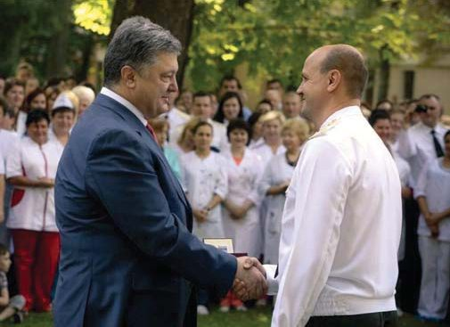
— На початку цієї війни Ви працювали в польовому госпіталі на передовій, і звичайно, для стоматологів-хірургів це була командна робота. Хтось із тих Ваших побратимів зараз працює у клініці, яку Ви очолюєте?
— На той час команда, яка забезпечувала надання хірургічної стоматологічної допомоги, складалася з двох осіб – я і мобілізований лікар з Харківської області Сергій Кобзєв. Сергій був патріотом, і знаючи, що армії потрібні лікарі-стоматологи, зголосився працювати у польовому шпиталі. Він надавав суто стоматологічну допомогу, я – хірургічну, доводилося працювати і в парі, бо це була цілодобова робота. Як я вже казав, стоматологи з двох областей, де йшла війна, виїхали, і закривати це поле щелепно-лицевої хірургії доводилося військовим госпіталям. Удень, окрім операцій і перев’язок пораненим, ми приймали багато цивільного населення – від дітей, що впали на дитмайданчику і розбили собі губи, брови, носа, які треба було зашивати, і до літніх людей, наприклад з пухлинами привушної слинної залози чи невогнепальними травмами. Начальник нашого шпиталю дозволяв надавати допомогу пацієнтам, які не могли виїхати в інші області, зокрема через похилий вік. Уночі російські бойовики, рашисти, як ми їх сьогодні називаємо, вели інтенсивні обстріли, і ми надавали допомогу пораненим бійцям, а вдень – цивільним, яким отримати стоматологічну допомогу було просто ніде. Мій колега по польовому госпіталю Сергій служить і нині у Збройних Силах України – стоматологом.
Проти агресора воює вся держава, а не тільки армія
— Українські стоматологи нині не тільки виконують свою безпосередню роботу в умовах воєнного стану, а й допомагають війську по-волонтерськи. Чим можуть численні стоматологи допомогти вам, щелепно-лицевим хірургам? Чи є місце і для них у Вашій справі?
— Під час війни робота знайдеться для всіх. Незважаючи на те, хто в чому спеціалізується, кожен повинен у міру своїх можливостей допомагати армії, допомагати цивільним, що постраждали від війни. В Україні більше цивільних лікарів, ніж військових. Ми ж не були державою, що воює постійно, на відміну від наших північних сусідів. Тож нині ті лікарі, які мають можливість і місце, де приймати пацієнтів, повинні це робити, і передусім допомагати переселенцям, родинам з дітьми, що втратили на війні батька, людям, які через війну не мають коштів для існування. Кожен повинен працювати на своєму місці інтенсивніше і більше надавати послуг на волонтерських засадах. Це пора, коли треба забути про свої матеріальні блага. Проти агресора воює вся держава, а не тільки армія. Для лікарів, які не є бідними людьми і завжди мають чим поділитися, це можливість матеріально підтримати і армію, і цивільних, що потребують допомоги. Дуже багато моїх колег приєдналися до волонтерської роботи, хто чим може і хто що вміє, те й роблять. Хтось закуповує машини для армії, для волонтерів, хтось аптечки чи витратні матеріали для різних розділів медицини…
Не можу тут знову не згадати Мирона Угрина і його фонд. З перших днів війни у 2014 році Мирон і його команда сприяли роботі військових стоматологів і щелепно-лицевих хірургів. Організована ним робота «ТриЗуб Дентал» – повне забезпечення кабінетів, що працюють на передовій, – це справа, за яку ніхто, окрім нього, не брався. Це цікава, але дуже дороговартісна, витратна робота, вона під силу тільки людям з високим духом патріотизму. Це велика і потрібна справа для військових – санація, усунення джерел інфекції в ротовій порожнині. Щелепно-лицева хірургія без такої роботи стоматологів неможлива. Тож подивіться, полікуйте, допоможіть… Військових стоматологів небагато. Відтак, надаючи безкоштовно стоматологічну допомогу воїнам, ви допомагаєте і нам, військовим лікарям. Ми захищаємо державу, ви допомагаєте нам у її захисті!
Яку б професію ви не обрали, будьте в ній професіоналами!
— Мені відомо, що Ви практично не покидаєте клініку, госпіталь, живете тут… А як сім’я допомагає Вам у напруженій роботі в клініці? І чи хтось із дітей мріє продовжити Вашу справу?
— Я не один такий, хто, будучи військовослужбовцем Збройних Сил України, днює і ночує в клініці. А з 24 лютого це доля всіх військових лікарів. Мій робочий кабінет – і спальня, і їдальня, і відпочивальня. З дружиною Вікторією, яку я кохаю і ціную за її підтримку, за допомогу, бачимося раз на тиждень, іноді двічі. На жаль, часу для родини все менше й менше через цю кровопролитну війну, яку розв’язала держава-терорист росія. Я обрав свою спеціальність, свій життєвий шлях, я військовик, і мені можна буде думати про відпочинок тільки після перемоги України.
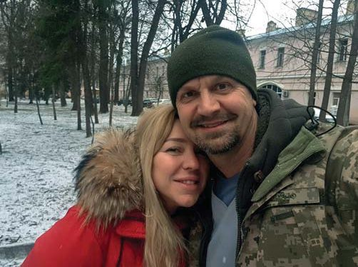
— Мої сини Андрій і Георгій спочатку думали стати лікарями. Але коли наближалася пора вибору професії, казали: «Знаєш, тату, я передумав ставати лікарем. Бачу, що ти не маєш вільного часу, тебе немає вдома… Хотілося б жити по-іншому». Сини обрали цікаві спеціальності, займаються улюбленою справою у сфері ІТ. Можливо, це й добре, що вони не пішли в медицину, бо це не було покликом їхніх сердець.
А донечці моїй Олі нині 15 років. Тиждень тому вона зателефонувала і сказала: «Я хочу бути медиком». І вже подала документи на вступ у Перший фаховий медичний коледж у Києві. Що ж, я радий і сприятиму їй у навчанні, набутті практичного досвіду та становленні в житті. У неї добре і співчутливе серце. А це – головне для медика.
Діти мають обирати ту професію, яка їм подобається, до якої мають здібності. Ви можете бути просто висококласним сантехніком або механіком, і вас будуть поважати всі, і будете добре жити. Яку б професію ви не обрали, будьте в ній професіоналами!
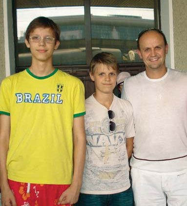
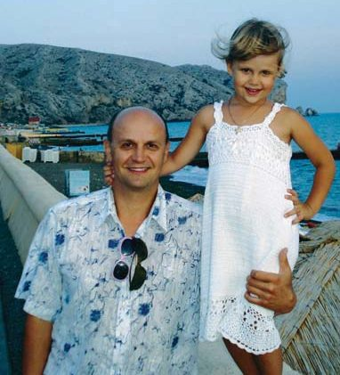
— Щоб уникнути емоційного професійного вигорання і успішно долати стрес, лікарі рекомендують мати якісь захоплення поза професійною сферою… Що Ви робите у вільний час, якщо він усе-таки випадає? Чим захоплюєтеся?
— Колись однією з моїх мрій було стати пілотом. У шкільні роки захоплювався філателією. Люблю слухати класичну музику і таким чином трохи відпочиваю після важкого дня. Люблю почитати про цікаві відкриття у науці, техніці, не кажучи вже про професійні статті. Навчався 5 років у музичній школі по класу скрипки, та не закінчив її, бо після 8 класу вступив у медичний коледж. Але й сьогодні дуже люблю музику…
— А як Ви гадаєте, політати ще вдасться?
— Думаю, так. У мене є цікава історія на цю тему. Якось довелося сидіти за штурвалом справжнього літака і керувати ним у польоті. Але про це іншим разом… Один із моїх методів для того, щоб розслабитися, – заплющую очі і уявляю, що сідаю за штурвал літака-винищувача, злітаю високо над хмарами, нижче яких залишаються усі проблеми. Бачу перед собою чисте небо… І за п’ять хвилин я вже сплю…
— А на скрипці й нині граєте? Як Шерлок Холмс – для того, щоб активізувати мозкову діяльність…
— Може, якийсь «Собачий вальс» і зіграю, але вдосконалюватися далі як скрипаль не маю часу. Дуже шаную людей, які вміють професійно грати на різних інструментах, і по-доброму їм заздрю.
— На завершення – традиційне запитання: які будуть Ваші побажання колегам, котрі читають журнал «ДентАрт»?
— Шановні читачі журналу «ДентАрт»! Шановні колеги-лікарі! Я дуже вдячний вам, хто всі ці роки підтримує Збройні Сили України! Будьте професіоналами своєї справи! Навчайтеся усе життя! Навчайте тих, хто поруч з вами! Передавайте свій найкращий досвід, діліться своїми досягненнями, здобутками. Знайомте колег і з досвідом своїх помилок, щоб їх ніхто не повторював. Тому що це наша спільна справа – виховувати нові покоління лікарів. Журнал «ДентАрт» – один із тих професійних журналів, які дають можливість не тільки дізнатися про нові технології і матеріали, але й познайомитися з професійними досягненнями українських і зарубіжних стоматологів, дізнатися про людей, які у своєму фаху перейшли на інший, набагато вищий рівень. Цей журнал – можливість для кожного з талановитих лікарів викласти результати своєї роботи – для того, щоб рівень української стоматології невпинно зростав.
— Дякую за рекламу! Ми сподіваємося прочитати на шпальтах нашого журналу і статті про Ваш неоціненний і такий необхідний усім нам досвід… Слава Україні!
— Героям слава!
Зустріч для інтерв’ю завершилася… Порятуємо! Вилікуємо! Переможемо!
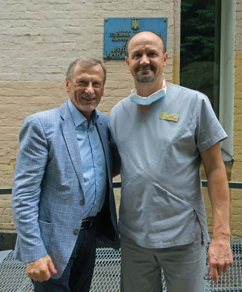